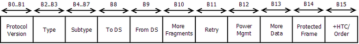

In 802.11 wireless networks, there are 4 types of frames, namely, Management, Control, Data, and
Extension frames. In this post, we will discuss about 802.11 Beacon frames, which is of management
type.
The session begins with the client saying "Hello". The client provides the following:
80 00
Frame Control
In the beacon frame,the first 2 bytes are frame control field. Version, Type and Subtype are
always present in Frame Control Packet.

.... ..00= Version: 0
.... 00..= Type: Management frame (00)
1000 ....= Subtype: 8
Version It is 2 bit field. It is set to 0 for WLAN (PV0) and set to 1 for
802.11ah (PV1)
Type It is also 2 bit field. Type decides the type of Packet. Packet can
be management, Control,Data or Extended. 00 defines management frame, 01 defines
control frame, 10 defines data frame and 11 defines extedned frame
Subtype It is also 2 bit field. This field defines the subtype of
management, control, data and extended frame like Association request,
Association response, probe request, probe response, beacon, authentication,
deauthentication are subtype of management type. RTS/CTS, ACK, Block-ACK,PS-Poll
etc are subtype of control frames. QOS, CF-ACK, CF-Poll, QOS Null etc are
subtype of Data type frame. Extended type is new to 802.11. DMG beacon and S1G
beacon are subtype of Extension frame.
QR is a one bit field that specifies whether this message is a query (0), or a
response (1).
OPCODE is a four bit field that specifies kind of query in this message. You
should use 0, representing a standard query.
AA Authoritative Answer - this bit is only meaningful in responses, and specifies
that the responding name server is an authority for the domain name in question section.
You should use this bit to
report whether or not the response you receive is authoritative.
TC TrunCation - specifies that this message was truncated. For this project, you
must exit and return an error if you receive a response that is truncated.
RD Recursion Desired - this bit directs the name server to pursue the query
recursively. You should use 1, representing that you desire recursion.
RA Recursion Available - this be is set or cleared in a response, and denotes
whether recursive query support is available in the name server. Recursive query support
is optional. You must exit and
return an error if you receive a response that indicates the server does not support
recursion.
Z Reserved for future use. You must set this field to 0.
RCODE Response code - this 4 bit field is set as part of responses. The values
have the following interpretation:
NOERROR(0) No error condition
FORMERR(1) Format error - The name server was unable to interpret the query.
SERVFAIL(2) Server failure - The name server was unable to process this query
due to a problem with the name server.
NXDOMAIN(3) - Meaningful only for responses from an authoritative name
server, this code signifies that the domain name referenced in the query does not
exist.
NOTIMP(4) Not Implemented - The name server does not support the requested
kind of query.
REFUSED(5) - The name server refuses to perform the specified operation for
policy reasons. You should set this field to 0, and should assert an error if you
receive a response indicating an
error condition. You should treat 3 differently, as this represents the case where a
requested name doesn’t exist